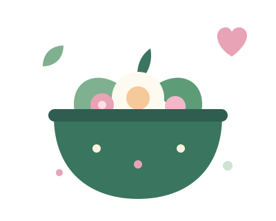
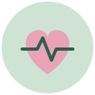
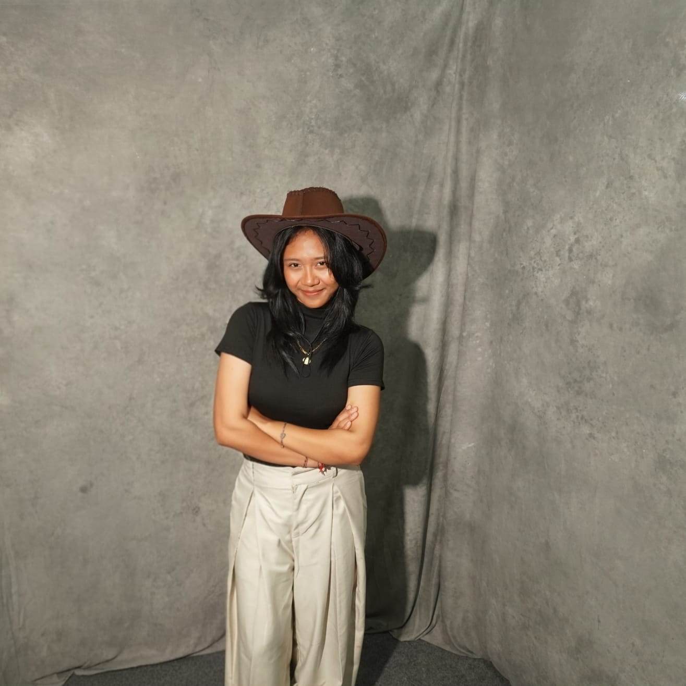
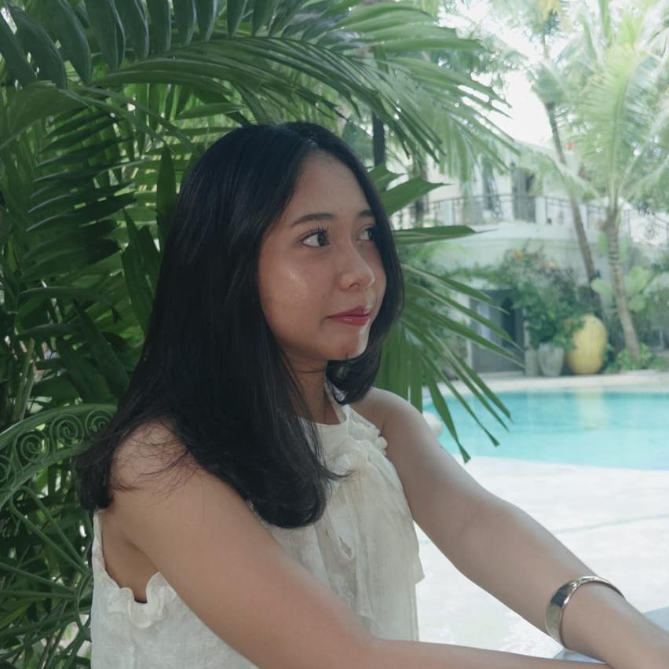
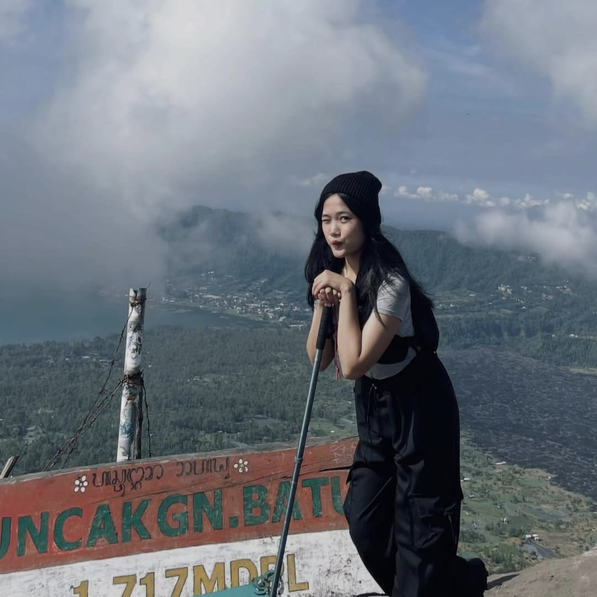
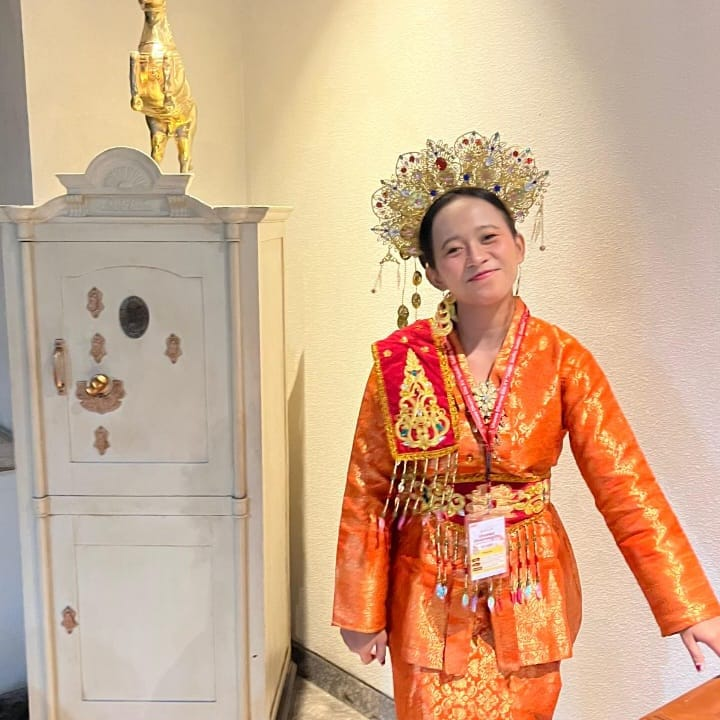

Mudah dipahami
Gizi seimbang, aktivitas fisik, kesehatan mental, dan pencegahan penyakit dijelaskan dengan bahasa sehari-hari.
Hidup Sehat adalah website edukasi yang membantu masyarakat memahami kesehatan dari sumber tepercaya, lalu mencobanya pelan-pelan dari rumah.

Kami mendukung SDG 3: Kehidupan Sehat dan Sejahtera. Fokus kami pencegahan, karena menjaga tubuh dan pikiran sebelum sakit jauh lebih ringan daripada memulihkannya.
Gizi seimbang, aktivitas fisik, kesehatan mental, dan pencegahan penyakit dijelaskan dengan bahasa sehari-hari.
Setiap topik disertai tips praktis yang bisa dicoba di rumah tanpa alat khusus.
Informasi merujuk ke Kementerian Kesehatan RI dan WHO, bukan kabar yang belum jelas asalnya.
Semua materi di website ini berpijak pada empat hal berikut.

Memilih makanan beragam sesuai kebutuhan tubuh.

Bergerak rutin supaya tubuh bugar dan jantung kuat.
Mengelola stres dan menjaga tidur agar pikiran tenang.
Kebiasaan sederhana yang melindungi dari penyakit.
Dikerjakan oleh 4 orang sebagai proyek UTS mata kuliah Pemrograman Web.

NIM 2515091014
Halaman Beranda dan Halaman Edukasi

NIM 2515091029
Halaman Informasi

NIM 2515091051
Halaman Panduan

NIM 2515091060
Halaman Tentang
Semua materi disusun dari sumber berikut. Kunjungi langsung untuk informasi lengkap dan terbaru.
Perlu diingat: isi website ini bersifat edukasi dan tidak menggantikan pemeriksaan atau saran dari dokter. Kalau ada keluhan, segera konsultasi ke fasilitas kesehatan terdekat.
Atribusi aset: seluruh ilustrasi pada halaman ini dibuat sendiri oleh tim pengembang.